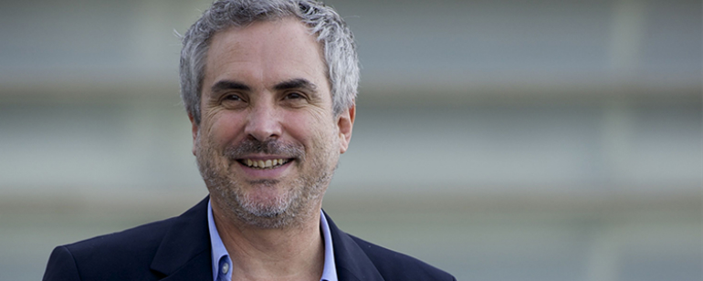

Roma, vindouro drama do aclamado cineasta, é um dos sonhos de consumo de Thierry Frémaux, responsável pela mostra francesa.
|
O desenrolar da novela sobre a disputa Festival de Cannes-Netflix continua ficando cada vez mais profundo. Após a companhia de streaming decidir impedir que todas as suas produções elegíveis pudessem debutar na Croisette em maio - seja na Competição principal, seja nas mostras paralelas -, o diretor do evento francês, Thierry Frémaux, declarou em entrevista que segue tentando reverter a decisão da gigante do entretenimento por causa de uma obra em específico: Roma, de Alfonso Cuarón (Gravidade). "Veja, nós conversamos com a Netflix. Temos um diálogo bom com eles. Ambos temos um problema. Eles têm um problema e o Festival de Cannes tem um problema. Eles seguem um modelo econômico que não querem alterar e as regras da França dizem que os filmes precisam ser lançados nos cinemas. Neste ano, avisamos, 'Vejam, há essa regra'. Eles poderiam ter dito, 'Não é um problema, vamos ficar com a mostra Fora de Competição' ou 'Para o filme de Alfonso Cuarón, faremos uma exceção e vamos aceitar lançá-lo em circuito na França'. Adoraria que tivessem dito isso e vou continuar implorando para que eles mudem de ideia. Eles seriam vistos como heróis", afirmou Frémaux, em entrevista ao ScreenDaily. A controvérsia data do Festival de Cannes do ano passado, quando o diretor da mostra selecionou duas obras da companhia de streaming para a seção principal do evento: Okja e Os Meyerowitz. No entanto, isso trouxe uma infinidade de problemas, uma vez que as produções foram vaiadas assim que o logo da Netflix surgia nos telões do sul da França. Um impasse se estabeleceu: como a empresa não abre mão de seu modelo de negócios, exclusivamente voltado para a distribuição em sua plataforma de streaming, suas obras não poderiam ser exibidas em Cannes. O motivo? A lei francesa que protege os interesses dos distribuidores tradicionais e determina que, para concorrer em Cannes, um filme precisa passar pelas salas de cinema locais. Frémaux quer que a Netflix se adeque ao regulamento francês, mas também concede que o imbróglio é motivado por leis antiquadas: "Estou pedindo para que eles aceitem as regras. Eles exibem dúzias e mais dúzias de filmes por ano na Netflix. Por que eles não podem lançar um comercialmente na França para que a obra possa vir à Cannes? Se você for à China, você enfrentará a censura. Você não pode exibir tudo o que quer lá. Cada país tem suas especificidades. A especificidade da França é que o país pede para que Cannes só coloque produções na mostra competitiva que serão lançados comercialmente [...] Pessoalmente, acho que é hora de mudar isso, mas por enquanto estamos em 2018, e é neste pé em que estamos". Assim, ao contrário do que muitos poderiam pensar, Frémaux mantém - ou tenta manter - boas relações com Ted Sarandos e sua companhia: "Até agora, só agi de boa fé para com a Netflix. No último ano, eles entraram com dois filmes, mas eu sofri duras críticas. Quase perdi meu emprego, foi violento. Gosto muito de Ted Sarandos, um dia estaremos juntos novamente no tapete vermelho. Muitas coisas vão mudar. A Netflix vai mudar, Cannes vai mudar. O filme de Alfonso Cuarón é lindo e também gostaria de aplaudir a Netflix por finalizar o projeto de Orson Welles [The Other Side of The Wind, considerado perdido até a chegada da companhia de streaming na jogada]". A Netflix, que também não pode enviar nenhuma produção para a mostra Um Certo Olhar, não está impedida de apresentar obras em seções não-competitivas. Assim, como a seleção oficial de Cannes ainda não está fechada, a companhia de streaming ainda tem tempo para voltar atrás em sua decisão - ou abrir a tão sonhada exceção para Roma. A prestigiada mostra francesa ocorre entre os dias 8 e 19 de maio - fique ligado! Por Danilo Pereira — 13/04/2018 às 19:40 |